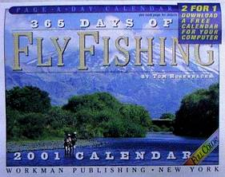

本棚から
ニュ―ジ―ランドで読んだ釣り関連の洋書 365 Days of Fly Fishing
Tom Rosenbauer 著
WORKMAN PUBLISHING 刊 ISBN 0-7611-1965-5
毎年11月中旬になると、ニュージーランドの大きなショッピングモールには、色とりどりのカレンダーを売っているお店、あるいはコーナーができます。動物、風景、自動車、鉄道、スポーツ、コミック、映画、歴史、格言、などなど、まさに百花繚乱のカレンダーが目を楽しませてくれます。
これらのお店が、新年明けて１月中旬を過ぎると、いっせいにバーゲンを始めます。だいたい50%引き、１月末から２月の声を聞くと、80～90%引きで投げ売り状態となります。そこでいそいそと出かけていって買ってきたのがこの卓上カレンダー。365 Days of Fly Fishingです。

フルカラーとうたっているだけあって、表紙をはじめ365日すべてが、アメリカを中心とした四季折々の美しく、迫力ある写真で飾られています。また、写真の脇には、フライフィッシングについての実に有用なティップスや秘訣が記してあり、釣りの参考書としても大いに役立ちます。
さらにお得なのは、このカレンダーには、Page-A-Day Digital Calendar というパソコン用のデスクトップカレンダーをダウンロードできるアクセスナンバーが付属しており、これまた様々な種類のカレンダーを楽しむことができます。
おそらく日本でも、アマゾンなどの書店で通信販売が可能だと思いますので、一度調べてみてはいかがでしょうか？あるいはアメリカ出張のおみやげとしても素敵だと思います。
2001/04/15
本棚から 目次へ
サイトマップ
ホームへ
お問い合わせ